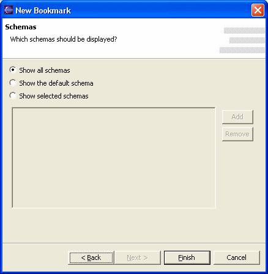

Optionally, the fourth page of the Bookmark Wizard lets you choose which schemas you want to work with.
By default, bookmarks are set up to view all schemas.
If your database doesn't support schemas (like, for example, MySQL), then the schema selection rule has no effect. The default schema is the same as the user name you have previouly selected to log in the database.